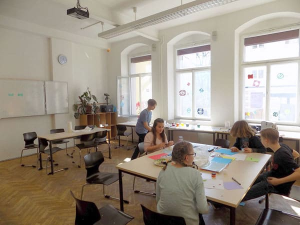

So sieht unser Tag aus.
Vergiss trockene Stundenpläne – hier erzählen wir dir, wie ein echter Schultag an der Semper Oberschule abläuft: vom Ankommen bis zum letzten Gong.
Ein normaler Tag (Montag bis Freitag)
Dienstag bis Donnerstag sieht der Tag so aus wie hier – montags starten wir zwei Stunden später (ab 10:00 Uhr), freitags endet der Tag früher (um 14:45 Uhr).
-
7:50
Ankommen
Am Schulhof oder direkt im Klassenzimmer. Die ersten quatschen noch, die anderen checken nochmal die Hausaufgaben.
-
8:00
Erste Doppelstunde
Mathe, Deutsch, Englisch – meistens als Doppelstunde. In kleinen Klassen mit maximal 24 Leuten, Fragen stellen ist ausdrücklich erwünscht.
-
9:30
Große Pause
Ab auf den Schulhof oder in die Aula. Wer will, kickt, quatscht oder hört Musik. Die Sanis-AG ist trotzdem immer erreichbar.
-
9:50
Mitten im Stoff
Jetzt wird's spannender: Chemie mit Experiment, Kunst mit Staffelei oder Musik im Fachraum mit Instrumenten.
-
13:10
Mittagessen & Pause
Gemeinsames Essen – so ziemlich der lauteste und lustigste Moment des Tages.
-
14:00
Unterricht oder AG
Noch zwei bis drei Stunden Unterricht – oder du bist in der Band, Theater- oder Robotik-AG. Ganztag heißt: Es ist immer was los.
-
15:30
Feierabend!
So geht Dienstag bis Donnerstag zu Ende. Freitags endet der Tag schon um 14:45 Uhr – und montags beginnt alles erst um 10:00 Uhr.
Was du nach 13 Uhr machen kannst
Der Ganztag bei uns ist keine Betreuung, sondern Programm. Ein paar Beispiele:
🎼 Schulband
Egal ob Gitarre, Schlagzeug oder Gesang – einmal pro Woche wird geprobt, Auftritte gibt's beim Sommerfest und Weihnachtssingen.
🎭 Theater-AG
Proben, Bühnenbild, Nervosität, Gänsehaut. Einmal im Jahr Aufführung – und alle, die wollen, sind dabei.
🤖 Robotik / MINT
Schrauben, programmieren, Wettbewerbe fahren. Unsere Roboter haben schon Preise geholt – ehrlich!
⚽ Sport
Volleyball, Fußball, Turniere zwischen den Klassen. Der Sport-AG-Termin ist meistens der Erste, der voll ist.
🎨 Kunst & Kreativ
Staffelei, Druck, Schulhaus-Gestaltung. Unsere Kunst hängt im Flur – schau vorbei!
🧑🤝🧑 Sanis & Streitschlichter
Wer Verantwortung übernehmen will: Erste Hilfe lernen, Konflikte begleiten, für andere da sein.
Die Tage, an die man sich erinnert
Winterheimfahrt
Die ganze Schule fährt gemeinsam in den Schnee: Ski, Rodeln, Abendspuk in der Jugendherberge. Klassenübergreifende Freundschaften entstehen genau hier.
Projektwochen
Eine Woche lang kein normaler Stundenplan: Themenprojekte in kleinen Gruppen – von Robotik über Streetart bis zur Vorbereitung des Italien-Austauschs.
Demokratie-Week
Wahlen, Debatten, Workshops. Wir lernen, wie Mitbestimmung funktioniert – und praktizieren sie in der Schülervertretung.
Sommerfest & Weihnachtssingen
Band-Auftritte, Kuchenstand, Klassenzimmer-Türen offen – und im Dezember singt die ganze Schule. Klingt kitschig. Ist es auch. Und genau deshalb fehlt es uns jedes Jahr.
Was uns als Nächstes bevorsteht
Der Jahresrhythmus unserer Schule – so sieht das kommende Schuljahr für uns aus. Genaue Daten stehen, sobald sie feststehen, auf der offiziellen Schul-Seite.
-
Dez. 2026
Weihnachtssingen
Die ganze Schule singt, die Band spielt, die Aula riecht nach Plätzchen. Genauer Termin folgt.
-
Jan/Feb 2027
Winterheimfahrt
Drei Tage Schnee mit der ganzen Schule: Ski, Rodeln, Abendspuk. Der Höhepunkt des Winters.
-
Feb/März 2027
Schnuppertage für zukünftige Fünftklässler
Ihr Kind begleitet einen Tag lang eine echte Klasse – mit uns, nicht mit dem Direktor. Anmeldung über die offizielle Schul-Seite.
-
Frühjahr 2027
Italienaustausch
Die Italienisch-Gruppen fliegen los – eine Woche Sprachbad, Pasta und Freundschaften fürs Leben.
-
Sommer 2027
Sommerfest
Band-Auftritte, Kuchenstand, Klassenräume offen, allerletszte Schulwoche. Auch ihr seid eingeladen!
-
Nov. 2027
Tag der offenen Tür (voraussichtlich)
Wir führen persönlich durchs Schulhaus. Das genaue Datum geben wir bekannt, sobald die Schule es festgelegt hat.
📌 Verbindliche Termine & frische Ankündigungen: offizielle Schul-Seite ↗



Interesse? Komm schnuppern!
Am Tag der offenen Tür (Samstag, 14. November 2026, 10–14 Uhr) führen wir persönlich durchs Schulhaus. Oder du schaust dir die offiziellen Anmeldeinfos an.